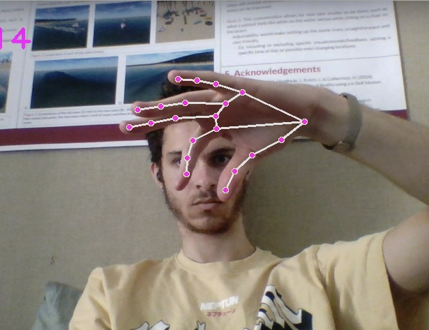

Project Overview
GestureBot is an innovative project that enables intuitive control of robotic manipulators using hand gestures captured through a single RGB camera. By leveraging computer vision techniques with OpenCV and MediaPipe, the system allows for full 6DoF (degrees of freedom) control of a robot's end effector, including both translational and rotational movements.
Key Features
Hand Tracking
Utilizes MediaPipe to detect and track 21 3D landmarks of the hand in real-time, enabling precise gesture recognition and control.
Intuitive Control
Separate modes for rotation and translation controlled by left-hand gestures, making complex manipulations more manageable.
Gripper Operation
Simple pinching gestures control the robot's gripper, allowing for natural interaction with objects in the environment.
Technical Implementation
The system employs several sophisticated components:
- MediaPipe for real-time hand landmark detection
- OpenCV for image processing and visual feedback
- Custom coordinate system conversion between MediaPipe and Robosuite
- Advanced depth calculation using relative landmark positions
- Rotation matrix computation using hand orientation
Results and Achievements
GestureBot successfully demonstrates:
- Real-time 3D tracking and control of robot end-effector
- Accurate rotation and translation mapping
- Reliable gripper control through gesture recognition
- Completion of complex manipulation tasks including stacking blocks and door handling